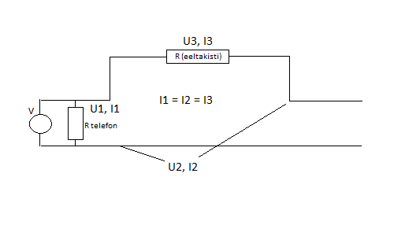
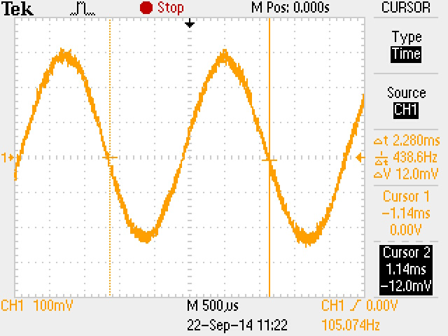
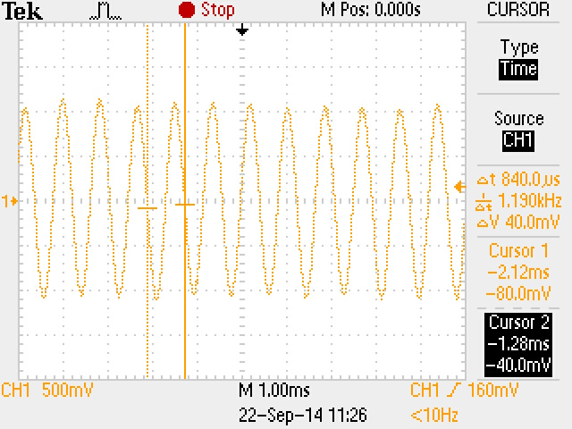
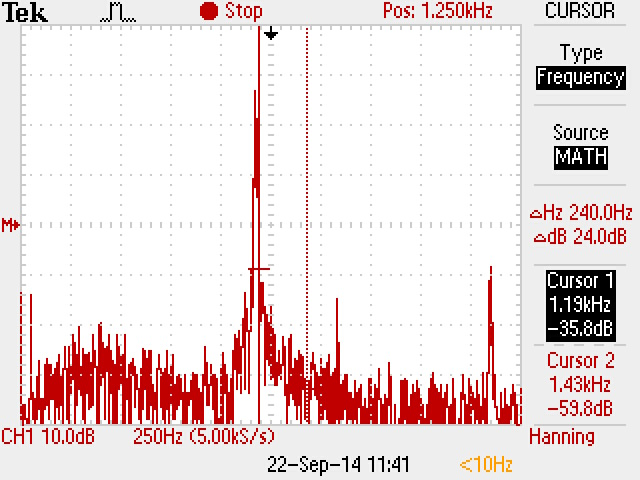
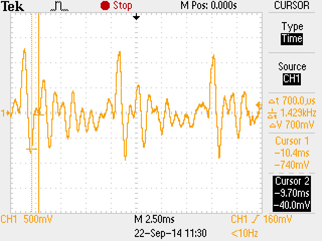
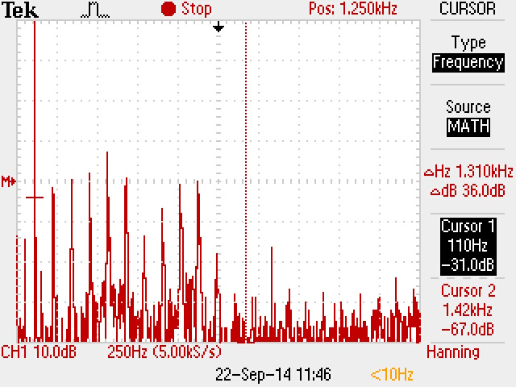
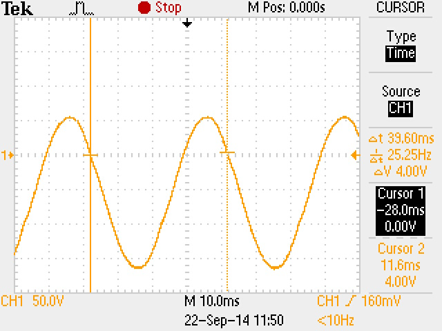
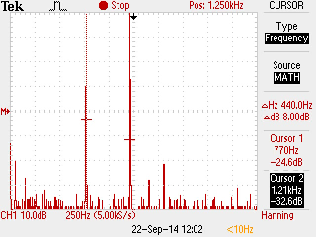
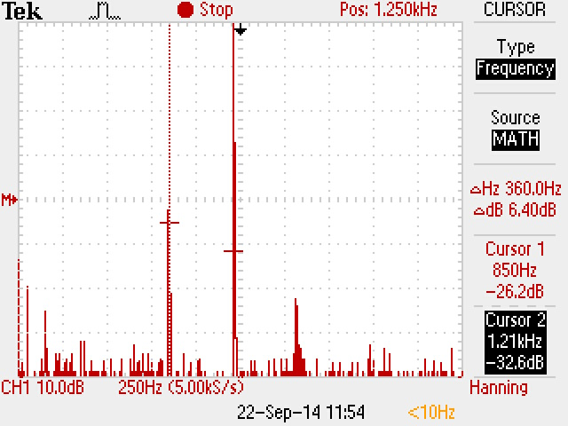

| Töö tegijate nimed: |
| Heigo Kruusimaa |
| Töö tegemise kuupäev: Mon Sep 22 10:03:10 2014 |
| Terminalseadme seisund | U1 [V] | U2 [V] | U3 [V] |
| Rahuseisund | 55.1 | 55.1 | 0 |
| Hõiveseisund | 10 | 7.4 | 2.6 |
Valimistooni kestus: 7 s.
Leida vool, mis läbib terminalseadet tema mõlemates seisundites ja selgitada tulemusi.

Voolu mõõtmiseks kasutan valemit I = U/R.
Takistuse väärtuseks on antud R = 50Ω.
Rahuseisundis: Irahu = U3rahu/R = 0 / 50 = 0A.
Hõiveseisundis: Ihõive = U3hõive/R = 2.6 / 50 = 0.05A.
Rahuseisundis vooluringis voolu pole ning voltmeeter näitab toiteallika pinget.
Arvutada telefoniaparaadi takistus ja telefoniliini takistus.
Takistuse arvutamiseks kasutan eelnevalt arvutatud voolu hõiveseisundil ning sama valemit.
Telefoniaparaadi takistus: Rtelefon = U1hõive/Ihõive = 10 / 0.05 = 200Ω.
Telefoniliini takistus: Rliin = Rkogu - Rtelefon - Reeltakisti = (55.1/0.05) - 200 - 50 = 852Ω.
| Valimistoon |  |
| Pinge amplituud | 300 mV |
| periood | 2.280 ms |
| sagedus | 436.6 Hz |
| Vile | Signaalipilt | Spektripilt | |
| Pinge amplituud | 2.7 V |  |  |
| Periood | 840 us | ||
| Sagedus | 1.190 kHz | ||
| Vokaal | Signaalpilt | Spektripilt | |
| Pinge amplituud (kõige suurem) | 1.25 V |  |  |
| Periood (kõige pikem) | 9.5 ms | ||
| Periood (kõige lühem) | 700.0 us | ||
| Sagedus (kõige madalam) | 105.3 Hz | ||
| Sagedus (kõige kõrgem) | 1.429 kHz | ||
| Kutsesignaal |  |
| Pinge amplituud | 27 V |
| periood | 39.6 ms |
| sagedus | 25.25 Hz |
| Toonvalimine |  |  |
| valitud number | 4 | 7 |
| jooniselt leitud esimene sagedus | 770 Hz | 850 Hz |
| jooniselt leitud teine sagedus | 1.21 kHz | 1.21 kHz |
| tehtud järeldus järgnevast tabelist | Vastab tabeli andmetele | Vastab tabeli andmetele |
Esimese praktikumi käigus saime ülevaate analoogtelefoni töökäigust. Katsetasime tema töörežiime (toru hargil/toru võetud), mõõtsime tema valimistoonisignaali ostsillograafiga. Samuti vaatlesime vile ja vokaali signaale ja spektrit kõne ajal, ning lõpuks kutsesignaali ja toonvalimise spektrit. Iseseisva tööna arvutasime välja Ohmi seaduse abil terminalseadet läbivat voolu ning telefoniaparaadi takistuse ja telefoniliini takistuse kogutakistusest, mis on tarvis määramaks kui pika liiniga veel heli saab edastada.